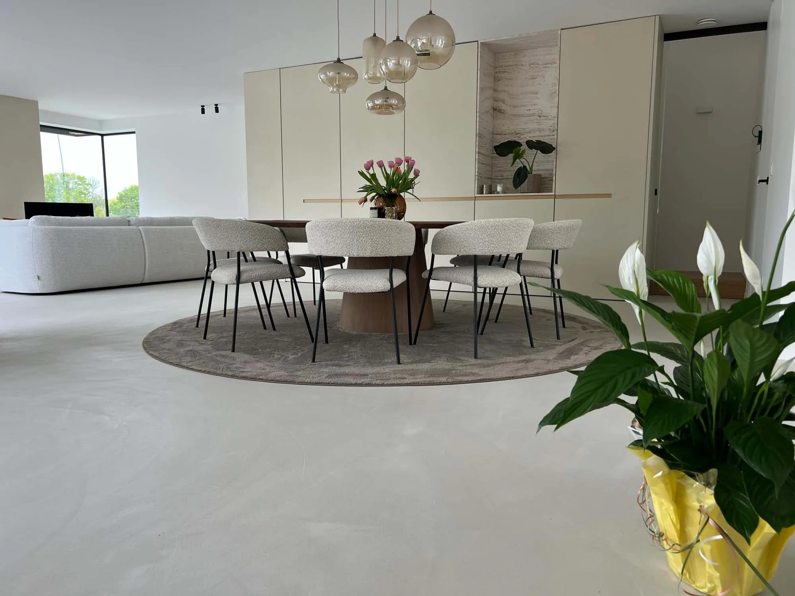
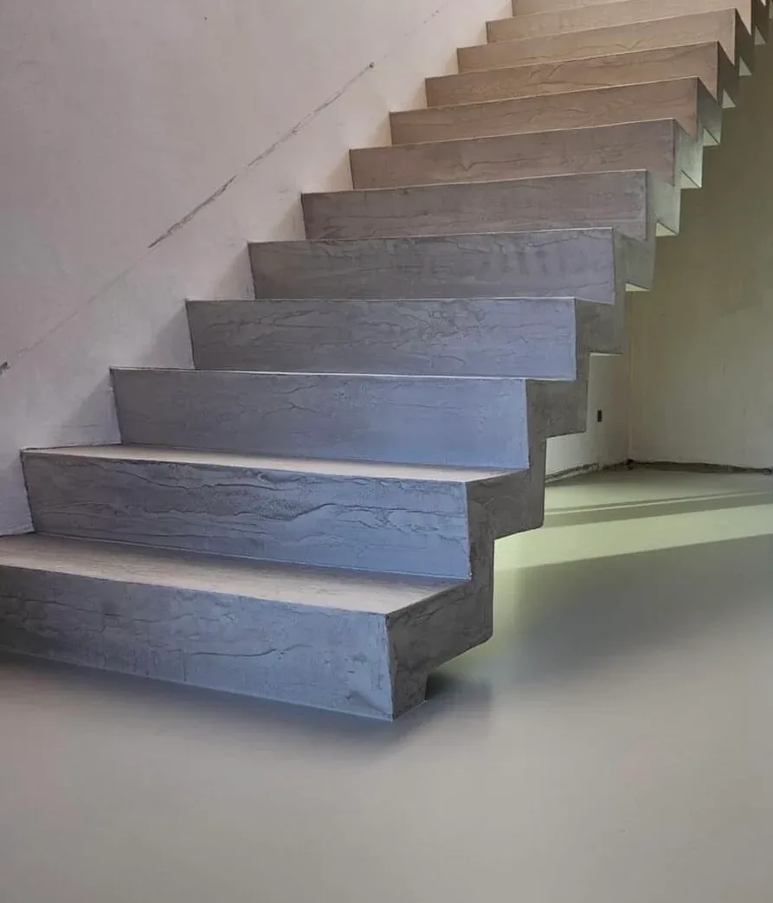
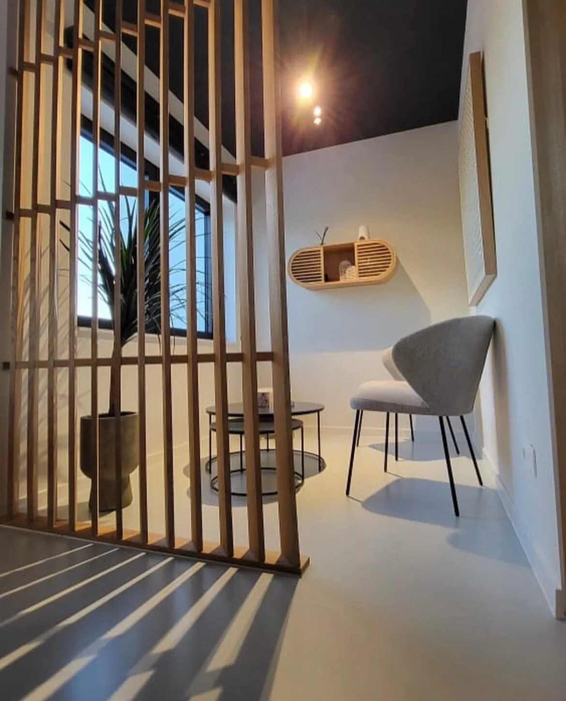
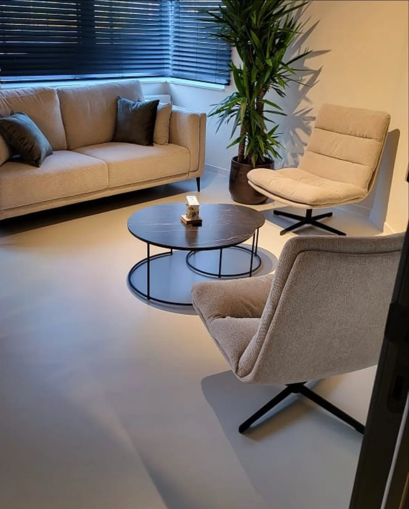
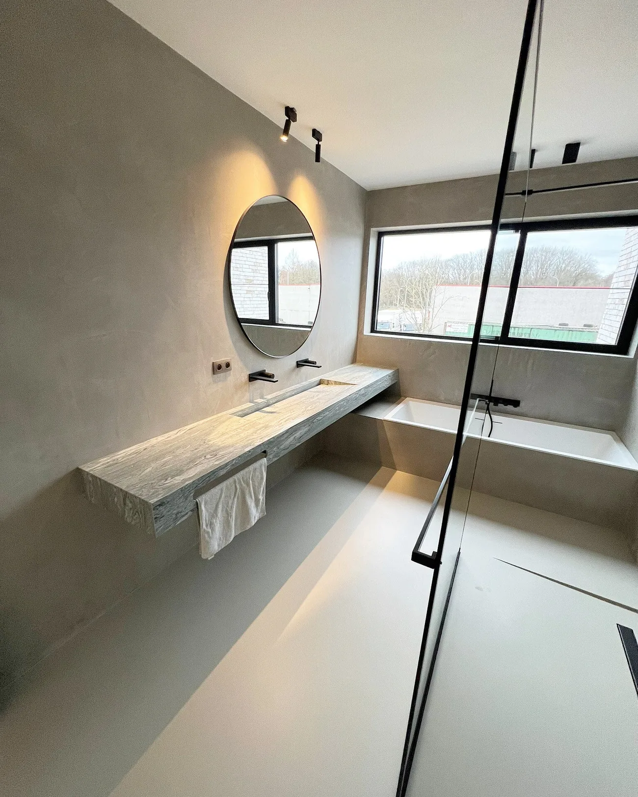
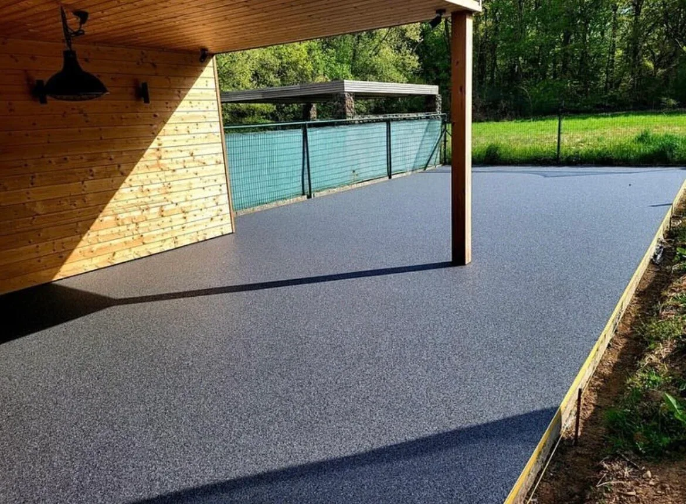
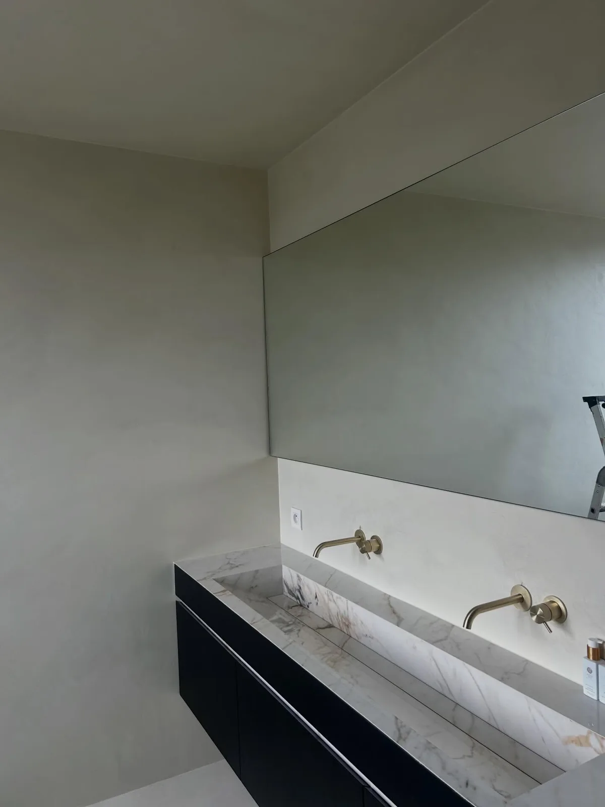
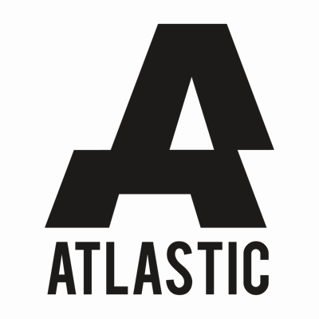

Gietvloeren
Een strakke, slijtvaste vloer zonder voegen, te combineren met vloerverwarming.
Woning en bedrijf

ATLASTIC Bel onsPU-gietvloeren, lavasteen en microcement, gelegd door een vakman met passie voor zijn werk. Strak, rustig en makkelijk in onderhoud.

Ook trappen en wandenDezelfde look van vloer tot muur, zonder één voeg.
Wij werken vloeren, wanden en trappen naadloos af. In woningen, maar net zo goed in een groot magazijn.
Atlastic is gespecialiseerd in gietvloeren, steentapijt, mortex en lavasteen. We onderscheiden ons in kwaliteit en een uitstekende klantenservice, en nemen onze klanten nooit als vanzelfsprekend aan. Zo realiseerden we al heel wat vloeren in Bilzen-Hoeselt, Tongeren, Genk, Sint-Truiden en verder.
Elk materiaal heeft zijn eigen karakter. We helpen je kiezen wat past bij je ruimte, je stijl en hoe je leeft.
Een strakke, slijtvaste vloer zonder voegen, te combineren met vloerverwarming.
Woning en bedrijfNaadloos en uiterst kras- en slijtvast, met een matte stone- of betonlook.
Natuurlijke lookEen waterafstotende en waterdichte pleister. Bijna elke ondergrond kan.
Ideaal voor badkamersOnze materialen werken ook verticaal. Dezelfde look van vloer tot plafond.
Eén geheelEen naadloze korrelvloer, ook op een bestaande vloer of trap.
Binnen en buitenDuurzaam, naadloos en zwaar belastbaar. Voor werkplaats, garage of magazijn.
Epoxy en PUStuur een paar foto's en de oppervlakte via WhatsApp, mail of telefoon.
Eerlijk advies over het materiaal dat bij je past, en een prijs op maat.
We houden je op de hoogte en betrekken je bij elke stap van het project.
Je krijgt uitleg over het onderhoud. Ook daarna blijven we bereikbaar.
Meer projecten vind je op onze Instagram.




17 reviews op Google, allemaal met vijf sterren.
"De communicatie verliep steeds vlot en duidelijk, en we werden actief betrokken bij elke stap van het project."
"Zeer tevreden! Duidelijk en eerlijk advies gekregen. Mooie vloer, makkelijk in onderhoud. En goede (na)service."
"Super vriendelijke zaakvoerder die passie heeft voor zijn werk. Een goede vakman en redelijk met prijzen."
Stuur een paar foto's van je ruimte en de oppervlakte. Dan krijg je een prijs op maat.


Ik maakte deze demo voor jullie om te tonen wat er kan. Na een kort gesprek maak ik er iets veel persoonlijkers van, helemaal naar jullie wens.
Vrijblijvend. Ik kom langs of we bellen.
Op maat, op jullie eigen domein.
Geen voorschot. Jullie betalen pas als alles klaar is.
Hosting, domeinnaam en kleine wijzigingen, zoals nieuwe openingsuren.
Omdat een voorbeeld meer zegt dan een mail. Zo zien jullie meteen wat er kan, en het kost jullie niets.
Nee. Het gesprek is vrijblijvend. Vinden jullie het niks, dan is het daarmee gedaan.
Na ons gesprek staat jullie site binnen 10 tot 14 dagen online.
Zeker. Jullie domeinnaam kan gewoon blijven, de nieuwe site komt in de plaats van de oude.
Nee, dat doe ik op basis van ons gesprek. Eigen foto's zijn mooi meegenomen, maar niet nodig om te starten.